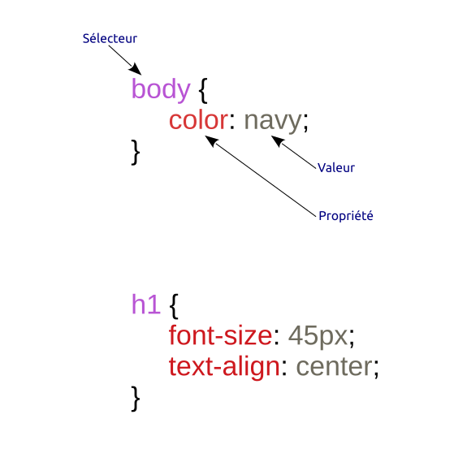

Cours / TP
Introduction à la création de pages Web en HTML 5 / CSS 3
HTML est l’abréviation de HyperText Markup Language. Il s'agit d'un langage qui formalise l'écriture d'un document web à l’aide de balises.
Une page HTML est un fichier texte contenant des balises permettant de structurer le contenu de la page (titres, paragraphes, images, liens, etc.).
La mise en forme du contenu est prise en charge par un autre fichier codé dans le langage Cascasding Style Sheet (appelé une feuille de style en cascade). L'expression de « cascade » permet ici de désigner la possibilité, pour un document HTML, d'avoir un style hérité de plusieurs de ces feuilles de style.
Ce TP est une brève introduction à ces 2 langages complémentaires.
1. Environnement de travail
L’environnement dans lequel nous allons travailler comprend :
- un éditeur de texte, par exemple
NotePad++ouBrackets, pour créer et modifier du code, - le navigateur de votre choix (Firefox de préférence, Chrome, Microsoft Edge, etc.) pour visualiser les pages créées et naviguer d’une page à l’autre.
2. HTML : principe général des balises
2.1 Balises HTML
Les balises structurent le contenu en délimitant les différentes parties du document HTML (titre, paragraphe, ...). Elles fonctionnent par paire: une balise ouvrante <nom_balise>, une balise fermante </nom_balise> délimitant ensemble une partie du contenu, représenté par une chaine de caractères. Exemple d’une balise délimitant un paragraphe :
<p>ici le texte du paragraphe</p>
L’exemple suivant montre la syntaxe permettant de placer une image dans la page Web. Dans la balise ouvrante, on trouve des paires attribut/valeur :
<img src="smiley.gif" alt="Smiley face" height="42" width="42"></img>
srcpermet d’indiquer le chemin vers le fichier imagealtdéfinit le texte de substitution à afficher éventuellementheightetwidthdonnent les dimensions de l’image.
Dans certain cas, une seule balise – à la fois ouvrante et fermante – est utilisée : <nom_balise />, celà ne l'empêche pas de contenir des attributs ; en réalité on l'utilise notamment pour la balise <img> et on écrira donc plus souvent :
<img src="smiley.gif" alt="Smiley face" height="42" width="42" />
Les jeux de balises peuvent être imbriquées entre elles :
<body>
<h1>du texte</h1>
<p>du texte encore, avec une image
<img …></img>
et ka fin du texte
</p>
</body>
Remarque : Lorsque plusieurs balises sont imbriquées, une règle simple s'applique : une balise ouverte à l'intérieur d'une autre doit obligatoirement être refermée avant la fermeture de sa balise mère.
2.2 Structure générale d’un document HTML
<!DOCTYPE html>
<html>
<head>
<meta charset="utf-8"/>
<meta name="Language" content="fr" />
<meta name="Description" content="cette page…" />
<title>Titre de la page</title>
</head>
<body>
Corps de la page, ce qui est visible...
</body>
</html>
La première ligne du document est indispensable : elle indique qu'il s'agit d'une page HTML. En HTML5 on écrit simplement <!DOCTYPE html> (vous pouvez rencontrer des fichiers HTML de versions antérieures avec un doctype beaucoup plus compliqué...).
Ensuite, la balise <html> </html> englobera l’ensemble des autres balises de la page. Elle contient deux paires de balises:
- La balise
<head> </head>délimitant l’entête du document et contenant diverses informations sur le document lui-même (métadonnées). Son contenu n’est pas visible dans la page interprétée par le navigateur. À noter :- l’encodage du texte
<meta charset="utf-8"/>pour éviter les problèmes d’affichages des caractères spéciaux - La balise
<title>Titre de la page</title>qui contient le titre (assez court) qui s’affiche dans l’onglet de la fenêtre du navigateur.
- l’encodage du texte
- La balise
<body> </body>délimitant le corps du document. Cette portion contient la partie visible du document HTML. C’est ici qu’on trouvera les autres balises (de différents types) structurant le document.
Exercice 1 : Création d’une page – une introduction au langage HTML
La page qui va nous servir d’exemple est la page d’accueil du site web d’un centre commercial. La page accueil.html est à récupérer à l'emplacement suivant : TP2.zip, puis nous allons :
- la visualiser dans l’éditeur de texte (lancez l’éditeur, puis ouvrez le fichier depuis le menu) : vous voyez le code HTML
- la visualiser dans le navigateur : vous voyez le code interprété par le navigateur (« la page web »)
🚀 Nous allons compléter le code du fichier accueil.html en suivant les instructions données en commentaires. Attention, une erreur de syntaxe s'est également glissée dans ce fichier, il faut la corriger !
Remarque : Vous passerez d’un outil à l’autre pour modifier et visualiser ce code (i.e. de l’éditeur au navigateur), sans fermer ces logiciels mais en enregistrant vos modifications dans l’éditeur et en actualisant la page dans le navigateur pour que le code soit réinterprété.
Exercice 2 : introduction à l’utilisation des hyperliens
Plusieurs types de liens existent. Pour l’instant nous allons voir les liens envoyant vers une autre page (du web ou que vous avez créée).
Pour pointer vers une page du web, on utilisera :
<a href="https://www.stid-grenoble.fr/">Lien vers le site de STID</a>
ce qui affiche : Lien vers le site de STID.
Pour pointer vers une de ses propres pages, il suffit de donner le chemin vers le fichier comme valeur pour l’attribut href.
Remarque : Un mécanisme existe pour demander au navigateur d'ouvrir la cible du lien si possible dans un nouvel onglet ou sinon dans une nouvelle fenêtre. Il faut pour celà utiliser l'attribut
targetet lui donner la valeur_blank:
<a href="https://fr.wikipedia.org/" target="_blank">Wikipedia</a>
🚀 Consignes:
- Créez une nouvelle page appelée
partenaires.htmlet placez-la au même endroit que le fichieraccueil.html. - Éditez le document
partenaires.htmlpour ajouter un lien vers le site du département STID (/!\ attention, la cible de ce lien doit s'ouvrir dans un nouvel onglet car on ne veut pas que les visiteurs quittent notre site !). - Insérez un lien vers la page
partenaires.htmldans le fichieraccueil.html. - En plus (ou à la place) d'utiliser un morceau de texte, on souhaite que l'utilisateur puisse accéder à la page
partenaires.htmlen cliquant sur l'image ajoutée précédemment. Comment devez-vous vous-y prendre ?
3. CSS : Objectifs et avantage
Une feuille de style est un document associé à un document HTML et qui indique comment devra être affiché tel ou tel élément de la page.
Par exemple, une feuille de style permettra de présenter :
- tous les liens en italique, soulignés et en bleu
- tous les liens cliqués en italique, soulignés et en vert
- tous les paragraphes de cours à connaître en police Comic, de taille 11, en noir, surlignés en gris et centrés
Le but recherché est de mettre en place une indépendance entre le contenu d’une page web et sa présentation, et ce pour garantir :
- une meilleure lisibilité du code source puisque les 2 aspects (contenu et style) sont séparés
- un gain de temps quand il s’agit de procéder à des modifications : pour changer, pour tous les titres, la taille de police, il suffit de changer une valeur à un seul endroit et la modification sera répercutée partout.
- une réutilisation aisée d’un contenu (pour lui appliquer d’autres styles) ou d’une présentation (qu’on appliquera à d’autres contenus).
3.1 Syntaxe
Il existe 3 façons de définir le style d'éléments en utilisant la syntaxe des CSS. Par exemple, pour que la couleur de fond d’un document HTML soit rouge, on pourra :
- Utiliser l'attribut « style » des balises HTML. Exemples :
<body style="background-color: red;"><p style="font-family: cursive">Contenu du paragraphe en police manuscrite</p>
- Utiliser la balise HTML « style » (dans l'en-tête de la page XHTML, entre
<head>et</head>). Exemple :
<style type="text/css">
body { background-color: red; }
</style>
- Utiliser une feuille de style externe et placer un lien vers la feuille de style dans l'en-tête de la page HTML.
Les instructions de style sont placées dans un fichier texte dont l’extension est
.cssalors que le contenu est dans le fichier HTML appelant. Nous privilégierons cette 3ème solution pour coder le style à appliquer à nos pages HTML. Une feuille de style externe est ainsi constituée d’une série de blocs d’instructions composés chacun:- d’un sélecteur,
- d’une accolade ouvrante,
- d’une série de couples propriété/valeur séparés par des points virgules,
- et d’une accolade fermante.

Pour revenir à l’exemple, on écrira ainsi un fichier texte contenant l’instruction body { background-color: red; } et on associera ce fichier à un document HTML : pour établir le lien avec la feuille de style (supposons qu’elle soit nommée mafeuille.css), on écrira dans l’entête du fichier HTML (i.e. entre les balises <head> </head>) :
<link rel="stylesheet" type="text/css" href="mafeuille.css" />
Exercice 3 : Découverte des CSS
Utilisez le tutoriel du site http://www.w3schools.com/css/ pour découvrir les CSS et en comprendre le fonctionnement. Cliquez sur le bouton vert Try it yourself pour accéder au logiciel en ligne.
Remarque : dans cet outil, la balise
<style>est utilisée (cf. 2ème syntaxe présentée).
🚀 Consignes :
Modifiez les instructions comme indiqué :
- pour
body, changer la couleur par #550066 (cliquez sur le bouton ‘Run’ pour visualiser le résultat après chaque modification) - pour
h1, utilisez la couleur jaune et alignez le texte à gauche - pour
p, passez en Arial 16 pixels, écrit en blanc (color: white;) - ajouter d’autres textes encadrés par des balises
<h1></h1>et<p></p> - modifier à nouveau les caractéristiques de style applicables aux balises
<h1></h1>et<p></p>
Exercice 4 : Liaison entre un fichier HTML et un fichier CSS
🚀 Consignes :
- Dans l’entête du fichier
accueil.html(celui de la page d’accueil du site web du centre commercial), établissez le lien vers la feuille de style fournie (styleAccueil.css). - Visualisez le fichier HTML dans le navigateur.
- Ouvrez ensuite le fichier
styleAccueil.cssavec l’éditeur de texte. - Modifiez et/ou ajoutez d’autres propriétés et/ou d’autres sélecteurs et visualisez le résultat.
3.2 Pour aller plus loin avec les CSS
Jusqu’ici, vous avez écrit des instructions de style qui s’appliquent à une balise (les mêmes balises ex. <h1> ont un seul et même style). Nous allons voir deux mécanismes supplémentaires portés par les attributs HTML class et id qui permettent d’appliquer des styles différents aux différentes occurrences d’une même balise.
Les classes. On définit autant de classes que nécessaires pour la balise concernée et on associe un style à chacune des classes. La notation suivante est adoptée :
Code CSS:
p.typeA { color: blue; }
p.typeB { color: red; }
Code XHTML:
<p>Un paragraphe sans style particulier<p>
<p class="typeA">Un paragraphe qui utilise le style défini par p.typeA dans la CSS</p>
<p class="typeB">Un autre qui utilise le style défini par p.typeB dans la CSS</p>
<p class="typeA">De nouveau un paragraphe qui utilise le style défini par p.typeA</p>
<p class="typeB">et un paragraphe qui utilise également le style défini par p.typeB</p>
Résultat:
Un paragraphe sans style particulier
Un paragraphe qui utilise le style défini par p.typeA dans la CSS
Un autre qui utilise le style défini par p.typeB dans la CSS
De nouveau un paragraphe qui utilise le style défini par p.typeA
et un paragraphe qui utilise également le style défini par p.typeB
Il existe une autre façon de procéder pour permettre l’application de styles différents à une même balise. Il s’agit d’utiliser non pas une classe (attribut class) mais un identifiant (attribut id).
Le principe est le même dans les deux cas mais la différence est qu’on utilisera l’attribut class lorsque le style est applicable à plusieurs endroits dans le document alors qu’on utilisera l’attribut id quand le style est spécifique à un endroit particulier dans le document.
En conséquence, la valeur d’un id est unique dans le document.
Code CSS:
p#abc {
color: blue;
text-align: center;
}
p#ident1 { color: green; }
Code XHTML:
<p>Un paragraphe sans style particulier<p>
<p id="abc">Seul paragraphe utilisant le style défini par p#abc dans la CSS</p>
<p id="ident1">Seul qui utilise le style défini par p#ident1 dans la CSS</p>
Résultat:
Un paragraphe sans style particulier
Seul paragraphe utilisant le style défini par p#abc dans la CSS
Seul qui utilise le style défini par p#ident1 dans la CSS
3.3 Quelques autres sélecteurs CSS que vous pourrez rencontrer...
La sélection de plusieurs éléments séparés par une virgule , :
h1, h2, h3 {
color: green;
}
Ici plusieurs types d'éléments (h1, h2 et h3) sont sélectionnés pour appliquer à tous une même règle.
Le sélecteur d'attributs avec la notation entre crochets :
img[src] {
border: solid 1px gray;
}
Ce sélecteur sélection les éléments qui possèdent l'attribut donné entre crochet. Ici la règle ne sera appliquée qu'aux images qui ont un attribut src.
Le sélecteur d'éléments enfants directs avec le combinateur > :
ul.type-A > li {
margin: 2em;
}
Ici la règle de style va s'appliquer seulement aux éléments de type li qui sont enfants directs d'un élément ul avec la classe type-A .
Le sélecteur d'éléments descendants avec le combinateur (espace) :
div span {
color: red;
}
Ici la règle de style va s'appliquer à tous les éléments de type span qui sont enfants (pas nécessairement directs) d'un élément div.
Des sélections encores plus fines avec les sélecteur de pseudo-classe
Nous verrons qu'il existe encore plusieurs manières de manipuler les sélecteurs CSS. Il est par exemple possible de cibler un élément seulement lorsque il est dans un état particulier : on parle alors de sélecteur de pseudo-classe.
Par exemple il est possible d'appliquer un style particulier aux liens (éléments <a>) qui ont déjà été cliqués par l'utilisateur en ciblant les liens appropriés avec la pseudo-classe :visited :
a:visited {
color: darkblue;
}
Cette possibilité va permettre d'étendre de manière puissante le mécanisme de sélection vu jusqu'ici grâce à l'existence de pseudo-classes telles que : :hover (spécification de l'apparence d'un élément lors du survole avec le pointeur), :disabled (pour cibler un élément désactivé), :only-child (sélection d'un élément qui est le seul enfant de son parent), etc.
Ainsi, la pseudo-classe :nth-child va rendre possible de cibler chaque élément qui est le nième enfant, quel que soit sont type, de son parent. Si nous avons 5 paragraphes dans un même élément de type div il est possible de sélectionner le second de la manière suivante :
Code CSS:
p:nth-child(2) {
color: red;
}
Code XHTML:
<div>
<p>The first paragraph.</p>
<p>The second paragraph.</p>
<p>The third paragraph.</p>
<p>The fourth paragraph.</p>
<p>The fifth paragraph.</p>
</div>
Résultat:
The first paragraph.
The second paragraph.
The third paragraph.
The fourth paragraph.
The fifth paragraph.
C'est également avec cet élément :nth-child qu'il va être possible de sélectionner tous les enfants dont l'indice est paire ou impaire en utilisant les mots-clés even ou odd.
Code CSS:
p:nth-child(even) {
background: green;
}
p:nth-child(odd) {
background: gray;
}
Code XHTML:
<div>
<p>The first paragraph.</p>
<p>The second paragraph.</p>
<p>The third paragraph.</p>
<p>The fourth paragraph.</p>
<p>The fifth paragraph.</p>
</div>
Résultat:
The first paragraph.
The second paragraph.
The third paragraph.
The fourth paragraph.
The fifth paragraph.